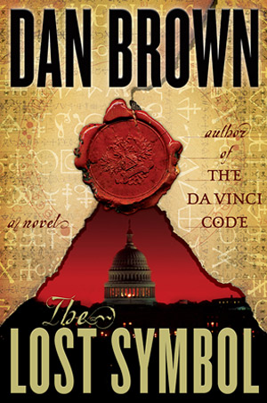
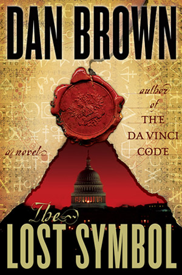
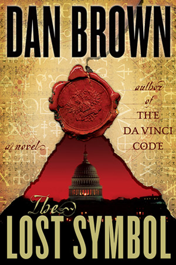

Dan Brown is the author of numerous #1 bestselling novels,including The Da Vinci Code, hich has become one of the best selling novels of all time as well as the subject of intellectual debate among readers and scholars. Brown’s novels are published in 56 languages around the world with over 200 million copies in print.Dan Brown is theauthor of numerous #1 bestselling novels,including The Da Vinci Code, which has become one of the best selling novels of all time as well as the subject of intellectual debate among readers and scholars. Brown’s novels are published in 56 languages around the world with over 200 million copies in print.
In 2005, Brown was named one of the 100 Most Influential People in the World by TIME Magazine, whose editors credited him with
The son of a mathematics teacher and a church organist, Brown was raised on a prep school campus where he developed a fascination with the paradoxical interplay between science and religion. These themes eventually formed the backdrop for his books. He is a graduate of Amherst College and Phillips Exeter Academy, where he later returned to teach English before focusing his attention full time to writing.

Dan Brown Has A New Thriller Coming Out Next Fall
Copyright ©